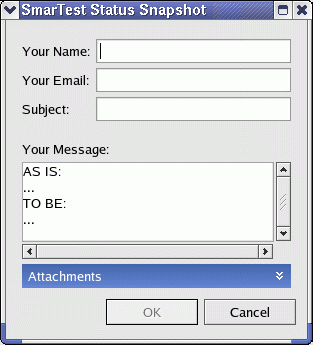
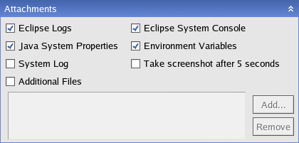
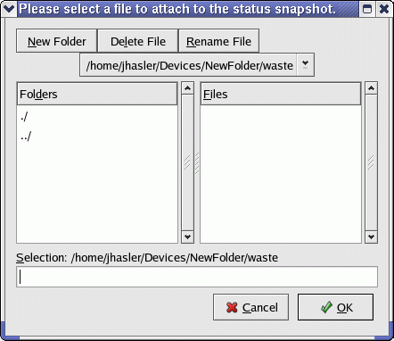

SmarTest Status Snapshot
This topic describes how SmarTest assists you to collect relevant information, like log files and a screenshot, that you can send additionally to your feedback to Advantest or your sales representative.
About this task
To make it easy for you to send feedback and additional environment information or log files, SmarTest offers with SmarTest Status Snapshot a tool that can gather SmarTest relevant environment information or log files for you. In addition you can add other files and even let SmarTest take a screenshot.
Procedures
Using SmarTest Status Snapshot
- On the menu click .
The SmarTest Feedback window opens.

- Type:
- Your name
- Your email address
- The subject
- Your messageNote The entries Your Name, Your Email and Subject are mandatory for saving.Note SmarTest Status Snapshot just collects information and saves them to a compressed file in your home directory. It does not send any information by e-mail. To send your feedback including the compressed file, use the established process at your site.
- To open the Attachments view click the blue Attachments bar.
The Attachments pane opens in the bottom of the window.

SmarTest collects the following files and information by default:
- Eclipse Logs
- Java System Properties
- Eclipse System Console
- Environment Variables
- Select the check box of the files or information you want to add or clear the check box of the files or information you want to exclude.
Type |
Description |
|---|---|
Eclipse Logs |
Attaches error logs and crash logs created by Eclipse |
Java System Properties |
Attaches a file containing the java system properties |
System Log |
Attaches the system log file |
Additional Files |
Attaches additional files you need to select, see procedure below. |
Eclipse System Console |
Attaches the Eclipse Console content (report window) |
Environment Variables |
Attaches the current environment variables, see SmarTest environment variables |
Take screenshot after 5 seconds |
Triggers a screenshot taken 5 seconds after clicking OK and attaches the screenshot |
- To save the report to a compressed file click OK.
(To abort the procedure click Cancel.)
SmarTest confirms the saving of the file and shows the file path in the confirmation window.
- Click OK to close the confirmation window.
Example of files, which may be comprised in the ZIP-file:
-rw-r--r-- 1 [username] users 6628289 Oct 26 09:40 CompleteSystem.slg -rw-r--r-- 1 [username] users 4451 Oct 26 09:40 eclipseSystemConsole.txt -rw-r--r-- 1 [username] users 4842 Oct 26 09:40 envVariables.txt -rw-r--r-- 1 [username] users 1184 Oct 26 09:40 errorLog.log -rw-r--r-- 1 [username] users 10164 Oct 26 09:40 jinfo.txt -rw-r--r-- 1 [username] users 10100 Oct 26 09:40 jstack.txt -rw-r--r-- 1 [username] users 194 Oct 26 09:40 report.txt
To add additional files
- On the Attachments pane, click Add.
The following window opens.

- Go to the folder containing the file.
- Select the file.
- Click OK.
Repeat the steps for each file you want to add.
Functional changes
- Introduced in SmarTest 6.5.3